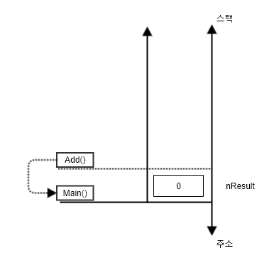
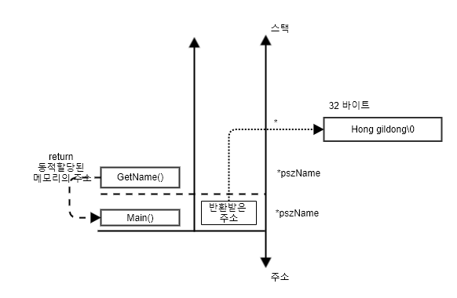

함수 응용
Call By Value : 매개변수가 값임
Call By Reference : 매개변수가 포인터로 사용됨.
Call by reference 방식이 Call by Value 에 비해 가장 다른 점은 주소를 통해 호출자 메모리에 접근할 수 있는 방법을 제시함으로써 두 함수가 좀더 강력하게 결합될 수 있다는 것입니다.
매개변수가 포인터일 때 포인터가 가리키는 대상 메모리의 크기를 인수로 받는 것은 보안적으로나 설계적으로 매우 중요합니다.
포인터의 가장 큰 문제는 가리키는 대상의 실제 크기를 포인터 자체만으로는 알 수가 없다는 점입니다. 피호출자 함수가 동적으로 할당한 메모리를 호출자 함수에서 해제 하는 특정이 있습니다. 메모리를 할당하는 함수와 해제하는 함수가 거의 대부분 달라질 것이기 때문에 아래의 예제를 잘이해 해야한다.
Call by reference를 이용한 교환 예제
문자열의 길이를 측정하는 기능
잘못된 주소 전달의 예
int Minus(int a, int b){
return a - b
}
// main 에서 호출 시
printf("%d\n", Minus(3,4));
Call By Reference : 매개변수가 포인터로 사용됨.
// 주소를 통해 호출자 메모리에 접근할 수 있는 방법
int Minus(int *a, int *b){
return *a - *b;
}
// main에서 x, y 값이 선언되어 있고 각 지역변수 x,y의 주소값을 인수로 지정
printf(%d\n, Minus(&x, &y));
Call by reference 방식이 Call by Value 에 비해 가장 다른 점은 주소를 통해 호출자 메모리에 접근할 수 있는 방법을 제시함으로써 두 함수가 좀더 강력하게 결합될 수 있다는 것입니다.
#include <stdio.h>
// 배열 실 인수는 '포인터' 매개변수로 받는다.
// 포인터에는 요소의 개수 정보가 없으므로 int 매개변수가 더 필요하다.
// 만일 입력 받아야 할 정수의 개수가 달라져도 이 함수 코드는 변하지 않는다.
void InitList(int *pList, int nSize){
int i = 0;
for ( i = 0 ; i < nSize; ++i){
printf("정수를 입력하세요. : ");
scanf("%d", &pList[i]);
}
}
// 요소가 int 형식인 배열이라면 요소의 개수와 상관 없이 정렬할 수 있다.
void SortList(int *pList, int nSize){
int i = 0, j = 0, nTmp = 0;
for ( i = 0 ; i < nSize -1 ; i ++){
for(j = i + 1; j < nSize; ++j ){
if(pList[j] < pList[i]){
nTmp = pList[j];
pList[j] = pList[i];
pList[i] = nTmp;
}
}
}
}
void PrintList(int *pList, int nSize){
int i = 0;
for ( i = 0 ; i < nSize ; ++i )
printf("%d\t", pList[1]);
putchar('\n');
}
int main(void){
// 자료구조를 지역변수로 선언했기 때문에
// 다른 함수에서는 직접 접근할 수 없다.
int aList[5] = { 0 }
InitList(aList, 5);
SortList(aList, 5);
PrintList(aList, 5);
return 0;
}
매개변수가 포인터일 때 포인터가 가리키는 대상 메모리의 크기를 인수로 받는 것은 보안적으로나 설계적으로 매우 중요합니다.
#include <stdio.h>
// 주소를 매개변수로 받을 때는 대상 메모리의 크기를 함께 받는 것이 좋다.
void GetName(char *pszName, int nSize){
printf("이름을 입력하세요. : ");
// 매개변수로 전달받은 주소를 다시 gets_s( ) 함수의 인수로 넘긴다.
gets_s(pszName, nSize);
}
int main(int argc, char* argv[])
{
char szName[32] = { 0 };
// 배열(주소)과 배열의 크기를 함수의 매개변수로 전달한다.
GetName(szName, sizeof(szName));
printf("당신의 이름은 %s 입니다. \n", szName);
return 0;
}
포인터의 가장 큰 문제는 가리키는 대상의 실제 크기를 포인터 자체만으로는 알 수가 없다는 점입니다. 피호출자 함수가 동적으로 할당한 메모리를 호출자 함수에서 해제 하는 특정이 있습니다. 메모리를 할당하는 함수와 해제하는 함수가 거의 대부분 달라질 것이기 때문에 아래의 예제를 잘이해 해야한다.
#include <stdio.h>
#include <stdlib.h>
// 주소를 반환하는 사용자 정의 함수 선업 및 정의
char* GetName(void){
char *pszName = NULL;
// 메모리를 동적으로 할당한다.
pszName = (char*)calloc(32, sizeof(char));
printf("이름을 입력하세요. :");
// 동적 할당된 메모리에 사용자가 입력한 문자열을 저장한다.
gets_s(pszName, sizeof(char)*32);
// 동적 할당한 메모리의 주소를 호출자 함수에 반환한다.
return pszName;
}
int main(int argc, char* argv[])
{
char *pszName = NULL;
// 이름이 저장된 동적 할당된 메모리의 주소를 반환받는다.
pszName = GetName();
printf("당신의 이름은 %s입니다.", pszName);
// 호출자 함수가 메모리를 해제해야 한다.
free(pszName);
return 0;
}
Call by reference를 이용한 교환 예제
#include <stdio.h>
// 매개변수로 주소를 받는다.
void Swap(int *pLeft, int *pRight){
// 주소를 가리키는 대상의 메모리 값을 교환한다.
int nTmp = *pLeft;
*pLeft = *pRight;
*pRight = nTmp;
}
int main(int argc, char* argv[]){
int x = 10, y = 20;
// 호출자 함수 안에 선언된 지역 변수의 주소를 전달한다.
// 따라서 함수가 반환한 후 x와 y의 값은 서로 교환된다.
Swap(&x, &y);
printf("%d %d\n", x, y);
return 0;
}
문자열의 길이를 측정하는 기능
#include <stdio.h>
// 매개변수로 전달된 문자열의 길이를 반환하는 함수
int GetLength(const char *pszParm)
{
int nLength = 0;
while ( pszParm[nLength] != '\0')
nLength++;
return nLength;
}
int main(int argc, char* argv[])
{
char *pszData = "Hello";
printf("%d\n", GetLength("Hi"));
printf("%d\n", GetLength(pszData));
return 0;
}
잘못된 주소 전달의 예
#include <stdio.h>
int* TestFunc(void){
int nData = 10;
// 함수가 반환되면 소멸할 자동 변수의 주소를 반환한다.
// 운영체제에 반환했거나 곧 사라질 메모리에 대한 주소를 반환하는 일은 없어야 합니다.
return &nData;
}
int main(int argc, char* argv[]){
int *pnResult = NULL;
pnResult = TestFunc();
// 포인터가 가리키는 대상 메모리는 유효하지 않은 메모리이다.
printf("%d\n" , *pnResult);
return 0;
}
자동 변수는 스택 영역 메모리를 사용합니다. 자동변수는 기억 부류 auto로 선언된 변수를 말하는데 별도로 명시하지 않은 모든 지역 변수는 모두 자동변수입니다.
함수의 매개변수 역시 자동변수이고 함수의 지역 변수입니다. 따라서 함수 내부에 선언된 변수와 매개변수는 기본적으로 '스택'을 사용합니다.
스택은 선형 자료구조의 일종으로 정보를 층층이 쌓아 올린 구조입니다.
스택과 메모리의 주소는 반대 방향을 그린다.
스택의 왼쪽에는 함수의 이름과 스코프의 시작 지점을 표시하고 오른쪽에서는 식별자 이름을 기술합니다. 우리가 작성하는 모든 예제들은 항상 main()함수에서 시작하므로 최초로 늘어난 스택은 main()함수에 속한 것으로 가정합니다. 그리고 그림에서 스택은 위로 증가합니다. 그러나 메모리리의 주소는 아래로 증가합니다. 따라서 메모리 주소가 증가 했다는 것은 스택이 들어들었음을 의미하고 주솟값이 작어졌다는 것은 스택의 증가를 의미한다고 생각할 수 있습니다.
스택은 선형 자료구조의 일종으로 정보를 층층이 쌓아 올린 구조입니다.
스택과 메모리의 주소는 반대 방향을 그린다.
스택의 왼쪽에는 함수의 이름과 스코프의 시작 지점을 표시하고 오른쪽에서는 식별자 이름을 기술합니다. 우리가 작성하는 모든 예제들은 항상 main()함수에서 시작하므로 최초로 늘어난 스택은 main()함수에 속한 것으로 가정합니다. 그리고 그림에서 스택은 위로 증가합니다. 그러나 메모리리의 주소는 아래로 증가합니다. 따라서 메모리 주소가 증가 했다는 것은 스택이 들어들었음을 의미하고 주솟값이 작어졌다는 것은 스택의 증가를 의미한다고 생각할 수 있습니다.
- 지역 변수는 선언된 순서대로 그린다.
- 포인터 변수는 별도로 표시한다.
#include <stdio.h> int main(int argc, char* argv[]){ int x = 10, y = 20; int *pnData = &x; // 포인터 변수는 간접 지정 대상이 어디인지 포인터가 가리키는 지점을 표시해야한다. *pnData = 100; return 0; } -
배열의 인덱스는 아래로 증가하게 그린다.
배열의 인덱스는 주소가 증가하는 방향으로 표시해야합니다. 배열의 이름은 '주소상수' 이므로 그자체가 스택에 Push되지 앟는다는 사실에 주의합니다. -
동적할당된 메모리는 따로 표시한다.
메모리를 동적할당하거나, 정적 영역을 사용하는 병수가 등장한다면 이는 스택 영역이 아니라 별도로 그려서 표시해야한다.#include <stdio.h> #include <stdlib.h> #include <string.h> int main(int argc , char* argv[]) { int nData = 10; char *pszBuffer = NULL; pszBuffer = (char*)malloc(12); strcpy(pszBuffer, "Hello"); free(pszBuffer); retur 0; } -
매개변수는 오른쪽부터 스택에 그리며 새 스코프는 기존 스택 위에 그린다.
만일 main()함수가 다른 사용자 정의함수를 호출할 경우에는 매개변수도 스택에 그려야 하는데 반드시 오른쪽 매개변수부터 먼저 push 하는 것으로 그립니다.
#include <stdio.h> int Add(int a, int b) { int nResult = 0; nResult = a + b; return nResult; } int main(int argc, char* argv[]) { int nResult = 0; nResult = Add(3,4); return 0; }
함수가 함수를 호출해 함수 몸체에 대한 스코프가 형성되면 스택에 가로선을 길게 그어 표시합니다. 아래의 그림은 main 함수가 Add함수를 호출했다는 것은 Add보다 Main이 먼저 실행됨을 전제 합니다. 따라서 스택에 표시할 때는 main 부터 시작합니다.

Add 함수의 처리가 완료되어 메모리를 반환할 때 아래와 같습니다.

동적 할당한 메모리에 저장하고 그 주소를 반환하는 함수를 만든 사례로 실행 과정과 스택 프레임의 변화를 개념적으로 다시 살펴보면,
#include <stdio.h> #include <stdlib.h> char* GetName(void) { char *pszName = NULL; pszName = (char*)calloc(32,sizeof(char)); printf("이름을 입력하세요 :"); gets_s(pszName, sizeof(char) * 32); return pszName; } int main(int argc, char* argv[]){ char *pszName = NULL; pszName = GetName(); printf("당신의 이름은 %s입니다.\n" , pszName); free(pszName); return 0; }
 GetName() 함수가 반환하면 GetName 함수의 지역변수였던 pszName 은 사실상 사라진다고 봐야합니다. 그러나 그 안에 담겨있던 정보는 호출자 함수인 main() 함수에 반환 값으로 전달됩니다.